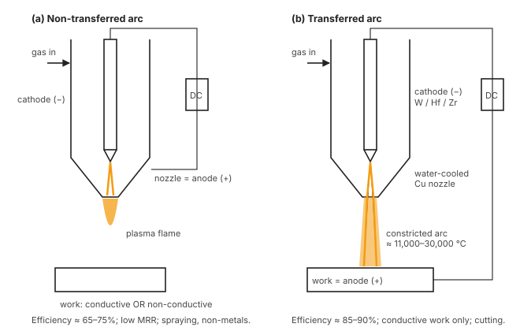

Unit 3 · Lesson 10 of 12 · ~22 min
Plasma arc machining: the fourth state of matter as a cutting torch
Squeeze an electric arc through a narrow nozzle with gas flowing round it. The gas becomes plasma at tens of thousands of degrees, leaves at hundreds of metres per second, and slices thick metal plate.
Explain plasma generation and removal, sketch and compare transferred and non-transferred arcs, describe the four torch types, state parameter effects and performance numbers, and solve the PAM numericals.
What plasma is
Heat a gas to about 2000 °C and its molecules split into atoms. Go to about 3000 °C and electrons start leaving some atoms: the gas is ionised. This glowing mix of free electrons, positive ions and neutral atoms is plasma, often called the fourth state of matter. It conducts electricity and responds to magnetic fields (Jain, p.207).
Its heat comes from recombination: electrons and ions rejoining into atoms, and atoms into molecules, release their bonding energy as kinetic energy. Plasma temperature reaches about 11,000–30,000 °C (Jagadeesha §7.0); Jain quotes up to ~33,000 °C.
Principle and mechanism of removal
- A DC arc is struck between a cathode (tungsten, or hafnium/zirconium in air torches) and an anode: either the nozzle or the work.
- Plasma gas flows around the electrode and through a constricting, water-cooled copper nozzle. Constriction raises current density, temperature and voltage, and gas leaves as a well-collimated jet at several hundred m/s (up to ~500 m/s).
- The work is heated by electron bombardment at the anode spot (transferred arc), convection from the hot plasma, recombination on its surface and, with oxygen, exothermic oxidation.
- Metal melts (some vaporises), and the jet's momentum blows the melt out of the kerf. Up to about 45% of torch power goes into removing metal (Jagadeesha §7.3).
Transferred vs non-transferred arc

| Aspect | Non-transferred arc | Transferred arc |
|---|---|---|
| Arc between | Cathode (−) and nozzle (+) | Cathode (−) and workpiece (+) |
| Work in circuit? | No: conductive or non-conductive work | Yes: conductive work only |
| Plasma form | Flame | Constricted arc column |
| Thermal efficiency | ~65–75% (nozzle absorbs anode heat) | ~85–90% (anode heat goes into work) |
| Penetration, MRR | Low | High: cuts thick plate |
| Uses | Spraying, surfacing, non-metals, ceramics | Cutting, gouging, welding |
Jain p.208–209; Jagadeesha §7.5.
Equipment and torch types
Elements: DC power supply (up to ~1000 A at ~200 V; 2–200 kW), gas supply (N₂, Ar, H₂, air and mixtures; up to ~1.4 MPa; roughly 2–11 m³/h), cooling water for both electrodes, control console and torch (Jain, p.209; Jagadeesha §7.4).
| Torch | How it works | Effect |
|---|---|---|
| Air plasma | Compressed air is the plasma gas; Zr or Hf electrode (tungsten oxidises in seconds) | Cheap; fast on steel; but double arcing (electrode → nozzle → work) kills nozzles; tapered cut; oxidised edges on Al |
| Oxygen-injected | N₂ plasma; O₂ injected downstream of the electrode | ~25% faster on ferrous metals (exothermic burning); lower nozzle life; poor edge squareness. Used for mild steel |
| Dual gas | N₂ plasma gas plus a secondary shielding gas (CO₂, O₂, Ar–H₂) chosen for the material | Sharp top corners; ceramic cup avoids double arcing |
| Water-injected | Water (~1.2 MPa) injected radially or swirling; ~10% vaporises and constricts the plasma; ceramic lower nozzle | Square cut, less smoke, smaller HAZ, longer nozzle life, fewer oxides; swirl makes one edge almost perfectly straight |
Parameters and their effects
- Current / power. More power cuts thicker plate faster. Power must rise together with gas flow rate (Jain, p.212).
- Gas type and flow. Higher flow gives more jet momentum and better melt removal. Carbon and alloy steels: N₂–H₂ or air; stainless steel, aluminium and non-ferrous: Ar–H₂ or N₂–H₂.
- Stand-off distance (~6–30 mm). Short SOD gives a narrow, intense arc and a better cut; too short invites double arcing from slag on the tip; long SOD needs more power.
- Cutting speed and thickness. Speed falls as thickness rises:
\[ S\ (\text{m/min}) = \frac{25.4}{t\ (\text{mm})} \quad \text{at } I = 500 \text{ A} \tag{9.1} \]As traverse speed increases, volumetric MRR rises to a maximum and then falls (Jain, p.211).
- Nozzle diameter and torch design set power density.
Performance (Jain, p.211–212)
- Plate up to ~150 mm thick.
- Tolerance ±0.8 mm for t < 25 mm; ±3 mm for t > 25 mm.
- Kerf 2.5–9.5 mm; taper 5–7° without swirl.
- Cut-edge roughness 5–75 µm; HAZ 0.75–5 mm.
Applications, advantages, limitations, safety
- Profile cutting of stainless steel, aluminium, copper, titanium, nickel alloys: metals that oxy-fuel cutting cannot handle (high conductivity, refractory oxide skin).
- Thick plate cutting, cheaper than oxy-fuel for thick sections; stack cutting; multi-torch shape cutting from one plate.
- Bevelling pipe ends before welding; CNC punching/nibbling-type cutting on thin plate.
- Plasma turning of hard materials (torch about 30° to the work); grooving hardened shafts; underwater cutting.
- Non-transferred: plasma spraying and surfacing of wear- and corrosion-resistant coatings.
Advantages
- Very high cutting speed and MRR (mild steel up to ~10× oxy-fuel)
- Cuts any conductive metal, regardless of hardness
- Simple work holding; easily automated with CNC
- Non-transferred mode works on non-conductors too
Limitations
- Poor accuracy, wide kerf, taper, dross/burr
- Large HAZ; metallurgically altered, hard edges
- Sharp corners difficult
- Smoke, noise, intense UV/IR radiation
Eye protection (UV/IR can permanently damage eyes); full skin cover; electric-shock precautions (work, torch and water table are live); ventilation and fume extraction; ear protection against noise; gloves. Water tables and water mufflers reduce noise, smoke and UV (Jain, p.211; Jagadeesha §7.12).
Numericals
Tutorial Q16. Empirical relation: cutting speed (mm/min) = k × Power (W) ÷ thickness (mm). Power = 50 kW, thickness = 20 mm, k = 0.6. Find the cutting speed.
Tutorial Q17. Plasma gas mass flow = 0.02 kg/s, cp ≈ 1000 J/kg·K, temperature rise ΔT = 2000 K. Find the power required.
Using Jain's Eq 9.1, find the cutting speed for a 12.7 mm plate at 500 A.
A 40 kW transferred-arc torch cuts 10 mm steel plate with a 3 mm kerf. 45% of torch power goes into melting. Assume steel needs u = ρ[c(Tm − T0) + Lf] with ρ = 7.8 × 10⁻³ g/mm³, c = 0.5 J/g·K, Tm − T0 = 1475 K, Lf = 270 J/g. Estimate the cutting speed.
PAM only needs to melt (the jet blows the melt away), so u is far smaller than EBM's vaporisation energy. That is why PAM's MRR is so high.
Practise
5 marksWith a neat sketch, explain the working of PAM. Distinguish transferred and non-transferred arc modes, and list its advantages and limitations.
Sketch: torch with cathode, gas inlet, water-cooled constricting nozzle, plasma jet, work (+), DC supply. Draw both modes if time allows.
Working: arc between cathode and anode ionises the gas; constriction in the nozzle raises temperature (11,000–30,000 °C) and velocity (hundreds of m/s); work heated by electron bombardment, convection and recombination; melt blown out by the jet.
Modes: non-transferred (arc to nozzle; any work; ~65–75% efficiency; spraying) vs transferred (arc to work; conductive only; ~85–90% efficiency; cutting).
Advantages: very fast, thick plate, any conductive metal, easy automation. Limitations: wide kerf, taper, poor tolerance (±0.8–3 mm), large HAZ, dross, fumes, noise, radiation.
Quick check
1. Why is tungsten avoided as the electrode in an air plasma torch?
- It melts at a low temperature
- It conducts electricity far too poorly
- It oxidises within a few seconds
- It reflects the plasma jet back
Oxygen in the air attacks tungsten, which lasts only seconds. Hafnium and zirconium resist oxidation (~2 h of cutting).
2. Which mode can machine a ceramic workpiece?
- Non-transferred arc mode
- Transferred arc mode
- Oxygen-injected transferred mode
- Dual-gas transferred mode
Only the non-transferred arc keeps the work out of the circuit, so the work need not conduct. Its MRR is low.
3. What does injected water do in a water-injected torch?
- Dissolves all the molten metal away
- Constricts the plasma and insulates nozzle
- Acts as the main plasma gas
- Cools only the top workpiece surface
About 10% of the water vaporises into a steam sheath that constricts the plasma and insulates the nozzle: squarer cuts, longer nozzle life, smaller HAZ, less smoke.
4. As plate thickness doubles at fixed current, cutting speed…
- Roughly doubles
- Stays constant
- Roughly quadruples
- Roughly halves
S = 25.4/t at 500 A: speed is inversely proportional to thickness.